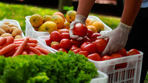
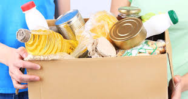
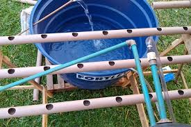
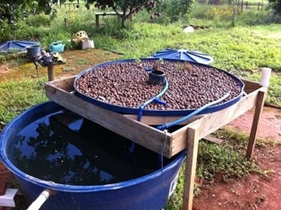

Projetos
Cestas básicas
SOLUÇÃO SIMPLES, PORÉM EFETIVA QUE AJUDOU MILHARES DE PESSOAS: A CRIAÇÃO DO NOSSO BANCO DE ALIMENTOS



Cultura Aquaponia
AJUDAMOS NA AGRICULTURA FAMILIAR, PARA AQUELES QUE VIVEM DA TERRA IMPLEMENTANDO FORMAS SUSTENTÁVEIS DE CULTURAS AGRÍCOLAS


